匆匆高铁，我带着你去广西
时间：
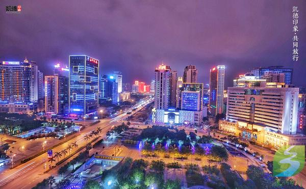
说到广西，就会想到桂林和阳朔，只是那段记忆并不美好。时间应该是在2006年的1月1日，当时和阿德第一次坐大巴去旅行，也是最后一次在中国尝试长途巴士旅行。中午在深圳的投资大厦上车，20多人的大巴车开了整整一个下午穿过整个广东进入广西，再用一个晚上时间，翻过几个山头，在凌晨时到达最终目的地阳朔。由于晕车，下车时我整个人脸都白了。
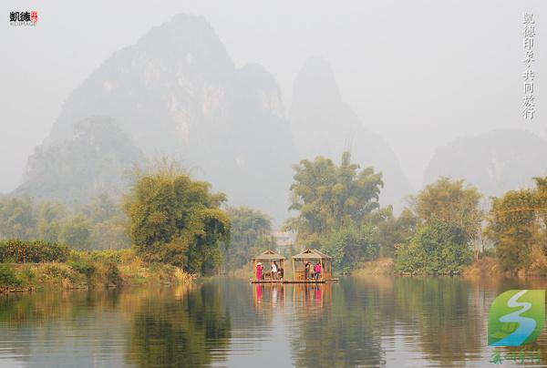
于是这次说起要去广西，我马上问，“不会再坐大巴了吧？”阿德笑着答道，“高铁早通了，现在广东过去只要4个多小时。”就这样日本回来的行程马上就定了去广西北部湾。一大早起床整理了关于日本天满宫的资料，写完稿件打了个车直奔高铁站。由于近段时间经常坐高铁出行，我们比出租车车司机还要熟悉到高铁站的路。
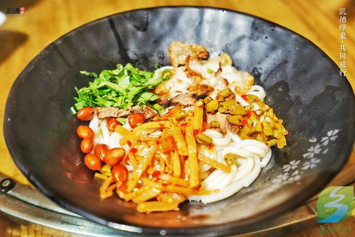
到了广西当然第一时间要吃米粉
答应央视四套要拍一段旅行家的视频广告，于是拖着行李箱跑去深圳北站的广场前匆匆录了段小视频。有了运动相机，配上自拍杆录制视频也越来越方便了。现在很多时候阿德常常拿着一个运动相机到处拍，最后连单反都忘记按快门。视频广告需要收集我们俩在世界各地的视频自拍，任务也是挺艰巨的。
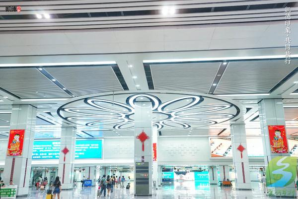
崭新的南宁高铁站
下午1点的高铁，在车站匆匆吃了个午饭，拖着行李上车。广东开往广西的高铁开通没有多久，不过上座率很高，最近一段时间天气多雨飞机经常晚点，而高铁基本都能准时到达，反而成了许多人中短途出行的首选。
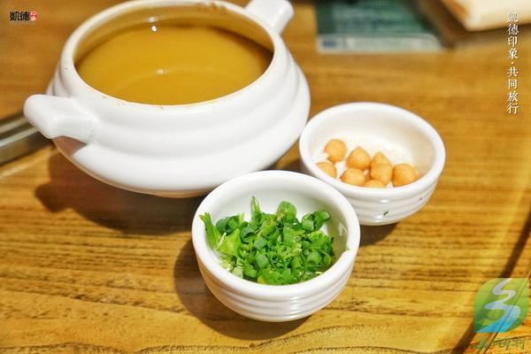
少数民族的特色苗家油茶
从深圳到南宁的高铁需要4个多小时，这趟高铁车厢明显新很多，车上还有电视娱乐节目。餐车也很正规，明码标价的盒饭里总算出现了15元的接地气盒饭和两元的矿泉水。车子路过广州，原本同行的小伙伴要在此上车，结果由于她昨晚太兴奋，今早没有赶上火车。好在广州到南宁的班次还比较多，她坐了后面一趟车子反而还更快，从广州到南宁只要3个多小时。“阿凯，你在写什么？”阿德侧过头来问道。“一个采访稿，关于我们这10年的旅行的。”“别太累了，休息一会儿吧！”阿德嘟囔道。“没事，很快写完了。”我朝他笑笑，“还答应了杂志社有一个台湾的稿件没写呢。”
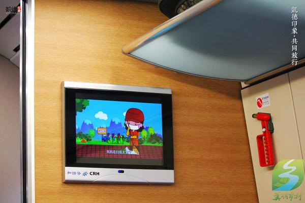
高铁车上的电视娱乐节目
这几年在国内旅行，其实我挺喜欢坐高铁出行的，比起坐飞机不需要安检，几乎不会晚点。高铁上也没有人抽烟，而且有空调，空间自由舒服。坐累了还可以站起来走动一下。最重要的，火车上是我最爱的阅读时光和写作时光。几个小时没有人打扰可以完整的看一本小说或者是写一篇文章。
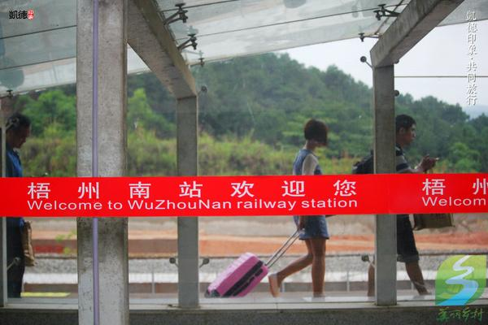
4个小时非常的快，一篇文章还没有写完车子已经到站了，广西我们又来了。朋友在南宁的万象城已经开了一桌。在车站总算见到了后来赶上的广州小伙伴，三个人打了个的士直蹦饭局。这次旅行前，我一直以为桂林是广西的省会，所以对于南宁其实很陌生。餐桌上一帮本地朋友嚷嚷着，“就让南宁低调地奢华着吧！”
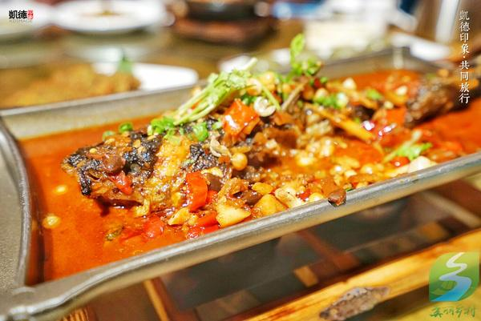
加了老友酱在里面的鱼特别入味
一桌子地道的广西菜，除了能叫得出名字的桂林米粉和柳州螺丝粉，什么茉莉花蜇头、瑶家油茶、擂椒一口茄、石磨黑豆腐全是第一次吃到。其实春秋战国时期，岭南称百越之地，广西属百越的一部分。就是在近代广西的北海一带也是从广东划出来归入广西的。不过广西菜和广东菜却差别很大。
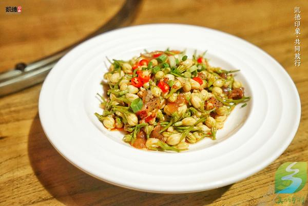
广西菜在烹饪做法上很大程度上受到粤菜的影响，但又因为广西众多的少数民族，多山临海，口味上丰富多彩了许多，而且本地菜很多取料野味，许多菜可以说是重口味的鲜爽。或许是因为这里的天气湿热，所以大多人爱吃辣，而且爱吃酸辣，这从当地人丰富多彩的各种佐料就可以看出，桂林辣椒酱，南宁的老友酱，陆川乌石酱油，田阳古眉面酱，苗家酸汤，东兴鲶鱼汁……光听名字就已经觉得脑洞大开了。
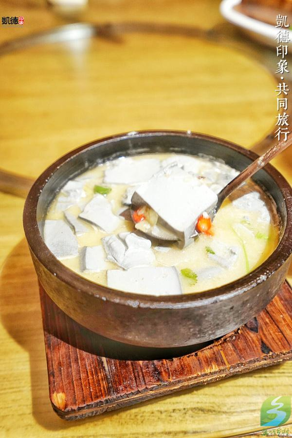
餐桌上的一帮好友边吃边聊，说起之后几天的行程，一帮本地朋友都有自己独特的美食推荐，看来广西之行终将演变成，奔跑吧，吃货！
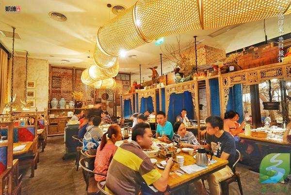
装修的很有苗家风格的餐厅
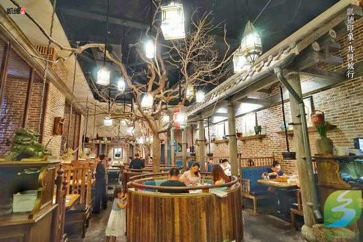
饭点时间餐厅里都是人
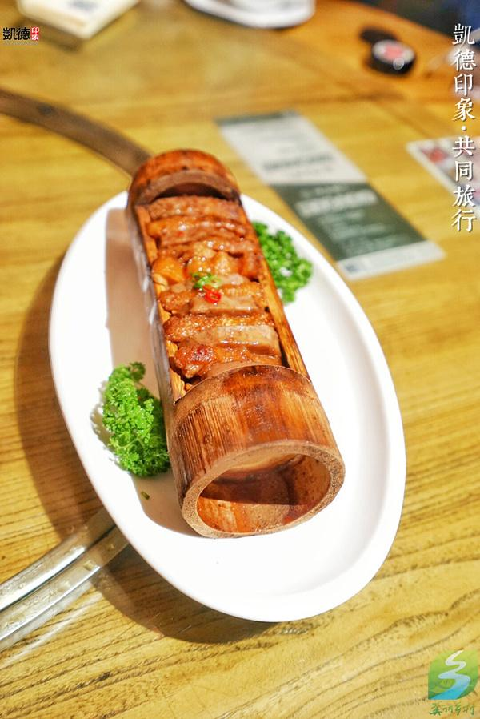
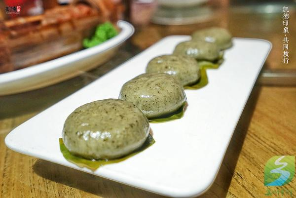
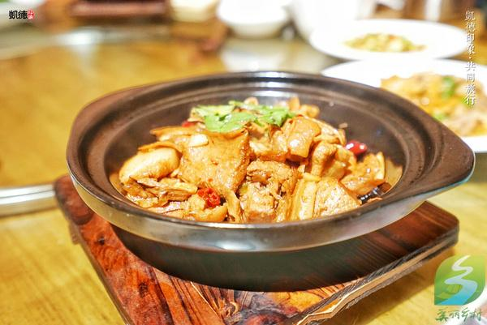
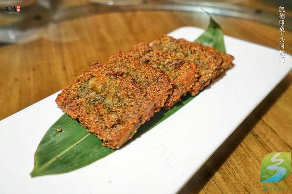
来源：搜狐旅游 图文：凯德印象
【凯德印象】：版权所有，未经允许，不得商用，转载请注明出处。工作联系QQ和微信：7711301工作邮箱：kelvin@kdimage.com
原文链接： 匆匆高铁，我带着你去广西